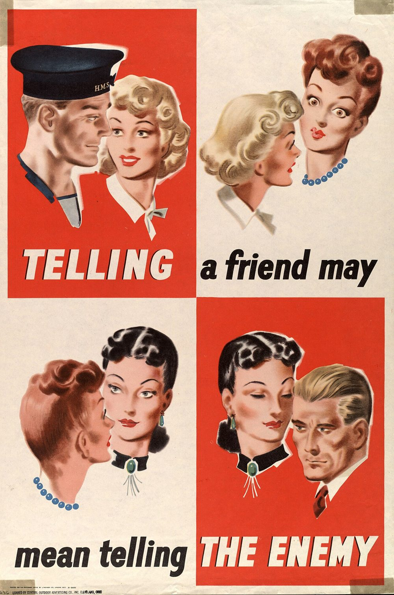

戰爭不只在前線打。有一種力量從內部下手——潛伏在一個社會裡、卻替外部敵人做事：散布謠言、製造對立、洩密、破壞、瓦解人心。這就是「第五縱隊」。它不見得拿槍，卻可能在真正的衝突爆發前，就先讓一個社會從裡面鬆動。這篇說明它是什麼、從哪來、現代長什麼樣，以及最重要的——我們如何警覺，又不落入它最想要的「內鬥」陷阱。

第五縱隊（Fifth Column）指的是：在一個國家或群體「內部」活動、卻祕密協助外部敵人的個人或組織。相對於在正面戰場推進的軍隊，第五縱隊的戰場是社會內部——它動搖的是團結、信任與抵抗意志。它的成員可能扮演以下角色：
這個詞出自 1936 年的西班牙內戰。當時一名將領對外宣稱：有四個縱隊的軍隊正從外圍進攻馬德里，而城內還有「第五縱隊」的同情者，會在內部策應、裡應外合。這句話廣為流傳，「第五縱隊」自此成為「內部敵人／內應」的代名詞，被用來形容任何從內部瓦解一方的隱藏勢力。值得注意的是：這個詞從誕生起就帶著「疑神疑鬼」的副作用——它既描述真實的內應，也常被拿來煽動對「自己人」的猜忌，這點後面會談。
今天的第五縱隊，更多發生在數位與認知層面，而非電影裡的密室交易：
| 形態 | 做法 | 目的 |
|---|---|---|
| 假訊息網軍 | 大量帳號同步帶風向、灌爆輿論 | 製造「大家都這麼想」的假象 |
| 被收買的意見領袖 | 以看似中立的身分傳遞特定敘事 | 借用公信力散布分化訊息 |
| 製造對立 | 放大族群、世代、政黨仇恨 | 瓦解內部團結 |
| 唱衰放棄 | 反覆散布「抵抗沒用」「已經完了」 | 削弱抵抗意志 |
| 滲透與破壞 | 吸收內部人員洩密、破壞基礎設施 | 削弱防禦與運作能力 |
它常與認知作戰結合，核心目標是：讓一個社會在真正衝突爆發前，就先自我懷疑、彼此分裂、失去信心。換句話說，最有效的第五縱隊，是讓你「自己打敗自己」。
第五縱隊不是抽象概念，歷史上一再出現：二戰期間，交戰各國都高度警戒潛伏的間諜與協力者，當時「小心隔牆有耳」「禍從口出」的反間諜宣傳鋪天蓋地（就像本文的海報）。冷戰時期，滲透、策反與地下宣傳是常態。到了近年的衝突，形態轉為大規模的網路假訊息與認知作戰——在多起地緣衝突中，都能觀察到有組織的帳號同步散布分化與唱衰訊息，試圖在開戰前後動搖對方民心。
對面臨外部軍事壓力的社會而言，這種「內部戰線」尤其關鍵：當敵人難以在正面取勝，從內部製造分裂、癱瘓意志，往往是成本更低的選項。這也是為什麼「守住團結與判斷力」本身，就是一種國防。
對抗第五縱隊，一般人最有力的武器不是揪出間諜，而是不被它的訊息操縱：
提高警覺是好事，但憑立場、族群、口音、或片面線索就指控某人是「內應」，正中第五縱隊與認知作戰下懷。因為製造內部猜忌與對立，本來就是它們的目標。當社會因恐懼而彼此公審、私刑、依族群劃分敵我，團結就被瓦解——這往往比真正的內應更具破壞力。真正的韌性，是警覺但理性、依證據不擴大化。
對付第五縱隊，社會層面的正解不是全民互相監視，而是：
這也是〈社區互助與鄰里防災網〉的延伸——彼此信任、互相照應的社會，遠比互相猜忌的社會更難被從內部擊垮。
第五縱隊要的是讓你害怕、分裂、彼此不信任。所以最好的反制，是保持清醒、查證、守住團結——警覺敵人的同時，別讓恐懼把身邊的人都變成假想敵。
潛伏在內部、祕密協助外部敵人的個人或組織——間諜、破壞者、協力者、帶風向的宣傳者，從內部瓦解社會的團結與抵抗意志。
出自 1936 年西班牙內戰：四個縱隊在外進攻，城內還有「第五縱隊」的同情者裡應外合，自此成為「內應」的代名詞。
多為數位與認知形態：假訊息網軍、被收買的意見領袖、製造對立、唱衰放棄、滲透破壞，常與認知作戰結合。
資訊素養＋情緒穩定：查證再轉傳、以官方為準、不被帶風向；但切勿憑立場或族群獵巫誣指。
因為製造內部猜忌正是敵方目標。彼此公審、依族群劃敵我會自我瓦解團結，比真正的內應更具破壞力。具體不法交由執法依證據處理。
※ 本文為一般資訊素養與國安常識的教育性整理，整理自公開歷史與官方宣導資料，不針對任何特定個人或群體，也不鼓勵任何形式的獵巫、誣指或歧視。發現具體不法情事，請交由執法與國安機關依法處理。